周五市场市场哗哗掉，但前两期物理AI逆市表现非常强势，因此还是需要打开市场广度，逐步累积，才具有挑选到好赛道和公司的眼力。今天给大家梳理超级电容
AI算力赛道又迎来硬核变革！曾经只是锦上添花的超级电容，现在直接逆袭，从可选配件升级成AI服务器标配！
消息面上，英伟达GB300，已将超级电容集成进电源架构！这一升级可直接降低30%电网峰值压力，精准解决AI服务器瞬时耗电难题。
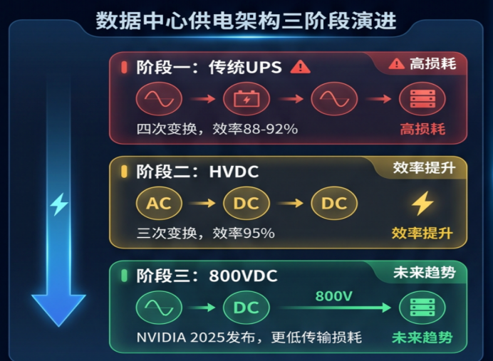
超级电容是介于传统电容与电池之间的储能黑科技，综合性能远超传统储能设备。依托专属储能机制，它拥有毫秒级响应、百万次充放电寿命，还能在-40℃至+65℃宽温环境稳定工作，能适配AI严苛工况。如今AI算力是毫秒级脉冲式负荷，波动极大，传统备电体系全面承压，超级电容成为解决瞬时功率波动问题的绕不开的方案。
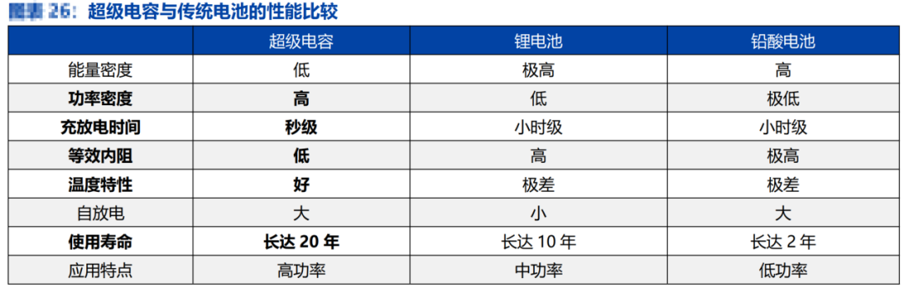
超级电容产业链，上游为核心材料，包括电容炭、电极箔、电解液等，技术壁垒较高；中游制造分两大核心路线：EDLC双电层电容、LIC锂离子电容；下游终端覆盖AI服务器、电网储能、轨道交通、新能源汽车等领域。
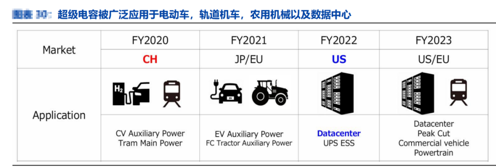
全球市场呈寡头垄断，日本武藏凭借LIC专利占据英伟达供应链主导地位，Maxwell则深耕EDLC路线。国内厂商虽然市占较小，但已有一定的产业链基础，在AI需求爆发背景下也迎来了机会。
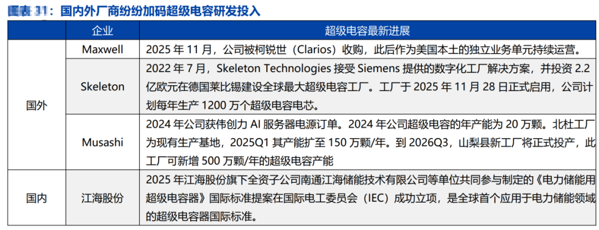
接下来，梳理超级电容产业4家核心。但需声明：本内容依据公开信息，仅对经营层面梳理，不构成任何建议。
助个人走向专业，消除信息差。更多热门赛道投研资料（研报、录音、动态跟踪，复盘视频），均及时发布在知识星球，欢迎扫码加入(每天仅需3毛，且支持3天内退出全额退款）
第一家，江海股份
国内电容器龙头，全球少数同时掌握铝电解电容、薄膜电容、超级电容三大技术的平台型公司。
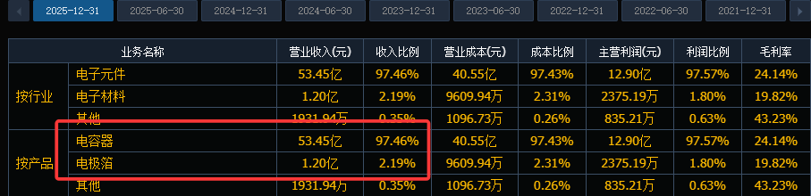
结构上，形成“三大电容+上游材料”产业布局。材料电极箔占比只有2%，实现一定程度自给，能有效降低成本。
电容器占比高达97%，包括铝电解电容、薄膜电容、超级电容三大类。其中，铝电解电容是传统核心产品，营收占比近八成，是现金牛业务。产品覆盖全系列规格，用于工业、消费电子、新能源、AI服务器等领域，核心客户包括台达、华为、宁德，工业级高端市场国内领先。
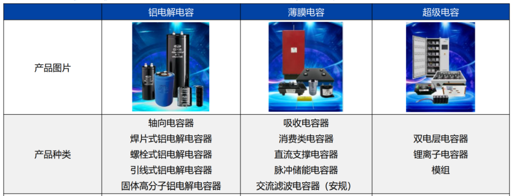
薄膜电容营收占比一成。主打光伏、风电、新能源汽车，绑定比亚迪等头部客户。但目前市场竞争激烈，毛利率水平较低（约13%）。
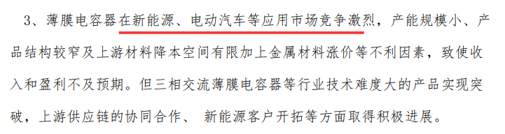
超级电容目前营收不到一成（约为6%），但增速很快，2025年同比增长超过50%，切入AI服务器等高增长赛道构成第二成长曲线。
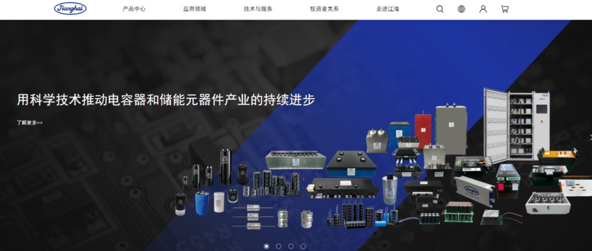
技术上同时掌握EDLC（双电层电容）和LIC（锂离子电容）两大超级电容技术，是全球第二家可批量生产LIC系列产品的企业。
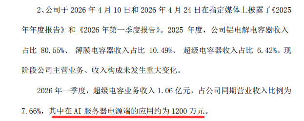
2026年一季度超级电容收入1.06亿，占比提升至7.66%，其中AI服务器电源端应用规模并不大（约1200万）。但公司在投资者活动关系中表示，2026年将是该领域规模发展的元年，在服务器电源方面已取得批量订单。
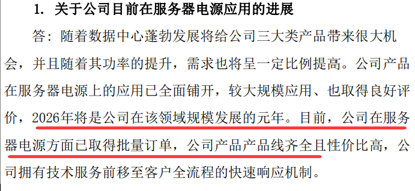
业绩层面，传统优势业务铝电解电容较为稳定，历史净利相对稳健。
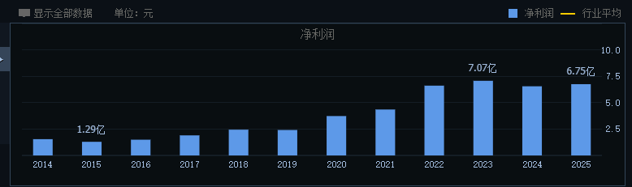
今年一季度，扣非净利同比增长12%。
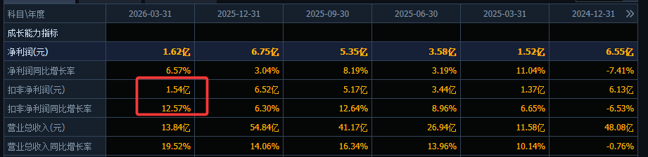
==========
第二家，元力股份
从事活性炭、白炭黑、硅酸钠生产，是国内唯一实现碱活化法超级电容炭规模化量产的公司。
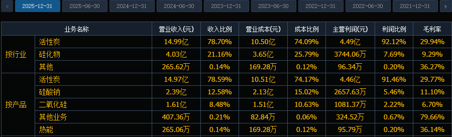
结构上，形成“传统碳+硅化物+新能源碳”三大业务矩阵。硅酸钠营收占比12%，毛利率11%，二氧化硅营收占比8%，毛利率7%，产品主要作为白炭黑原料及用于橡胶、牙膏、涂料等领域，这两块盈利能力都不强。
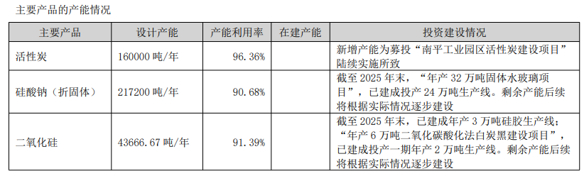
核心支柱为活性炭，占比79%，毛利率近30%，贡献八成利润，盈利能力较强；产品包括三大块，一是食品级、环保级、医药级木质活性炭。这一块较为稳健，公司全球木质活性炭龙头，产销和出口量连续多年全国第一，产能超过15万吨/年，市占率超30%；
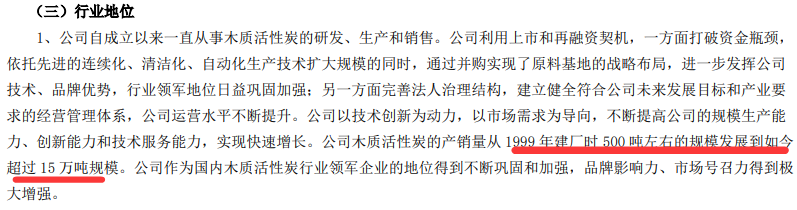
二是钠电硬碳，客户包括宁德和中科海钠等，目前钠电处于产业化前期，目前盈利能力较低。
三是超级电容炭，是核心电极材料，决定超级电容的能量密度和功率密度。电容炭占超级电容总成本的30%-50%，是第一大成本项。公司产品打破日本可乐丽的垄断，产品价格具有性价比。是国内唯一、全球第二实现超级电容炭规模化量产的企业。
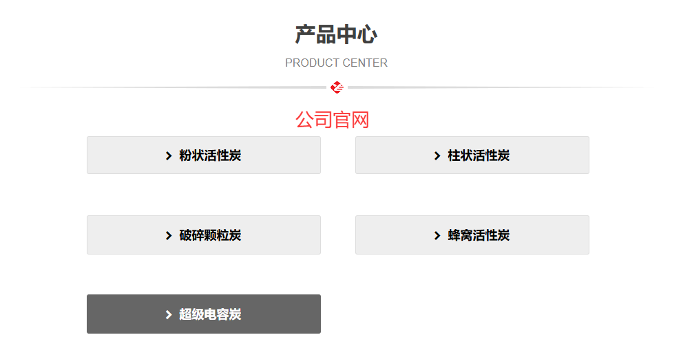
不过目前营收占比不高，2025年新能源碳材料占总收入只有5%，其中包含超级电容炭、钠电硬碳、固态电池多孔碳在内的新能源碳材料业务，据机构测算，2025年超级电容炭约占总营收的2%左右。
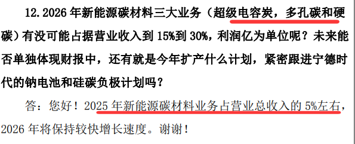
不过公司超级电容炭产能会从2025年的600吨/年提升至2026年的1000吨/年，目前已达产稳定销售。客户包括，公司互动平台表示AI算力会发展，扩大超级电容炭的需求。
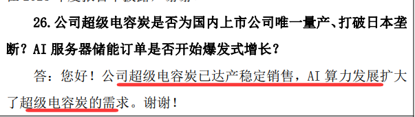
业绩方面，活性炭盈利能力相对稳定，历史净利相对稳健。
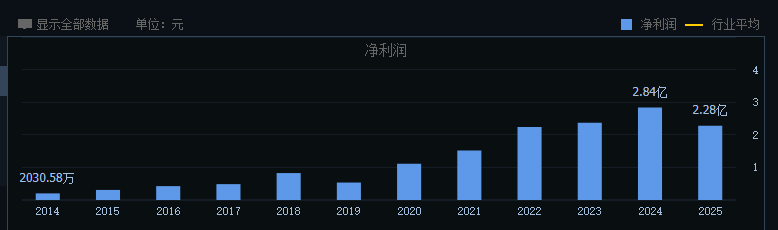
2025年硅化物毛利率大幅下滑，扣非净利同比下降10%。今年一季度，管理费用同比大增24%，扣非净利同比下降11%。
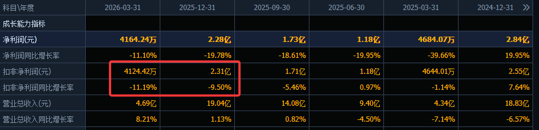
==========
第三家，海星股份
电极箔行业龙头，是电子储能材料行业的重要参与者，主营铝电解电容器用电极箔。
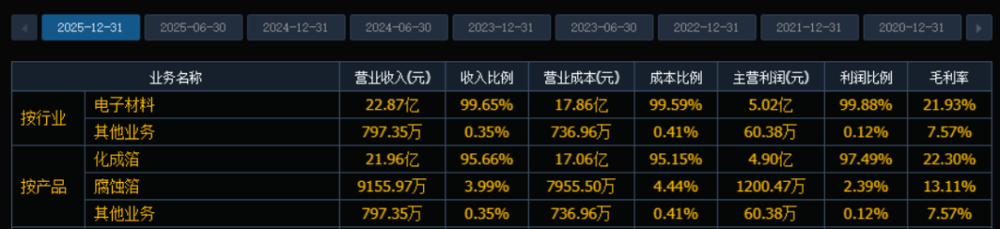
业务结构高度集中，核心产品化成箔营收占比95%，毛利率22%。贡献97%的利润；电极箔是铝电解电容器的关键原材料，由高纯度电子铝箔经侵蚀、阳极氧化制成，有铝电解电容器CPU之称，通常占电容器总成本的30%至60%，其性能直接决定电容器的容量、寿命和可靠性。
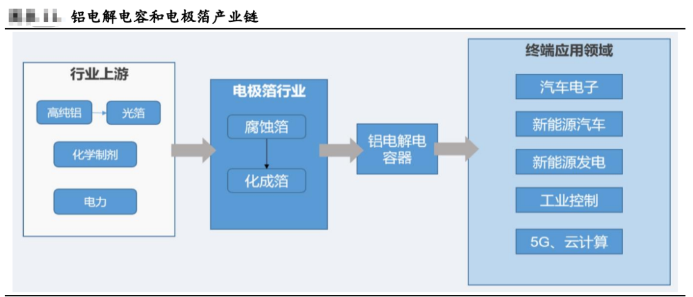
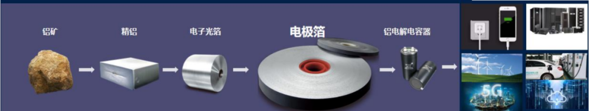
公司产品系列齐全，涵盖高低压全系列，用于高性能铝电解电容器制造，广泛应用于AI服务器、新能源汽车、光伏储能、消费电子、工业控制及航空航天等领域。
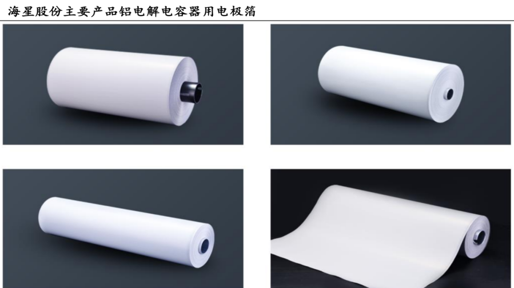
客户包括江海股份、贵弥功、尼吉康、艾华集团等全球主流电容厂商。
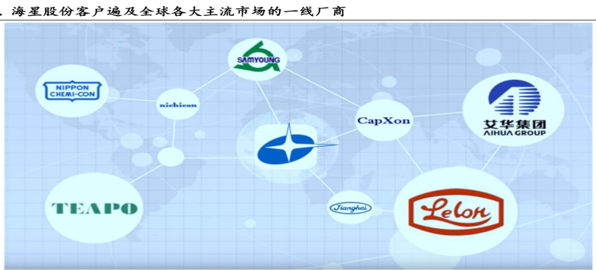
行业地位方面，根据中国电子元件行业协会月报告，2025年公司中高压化成箔国内全球市占率第一。
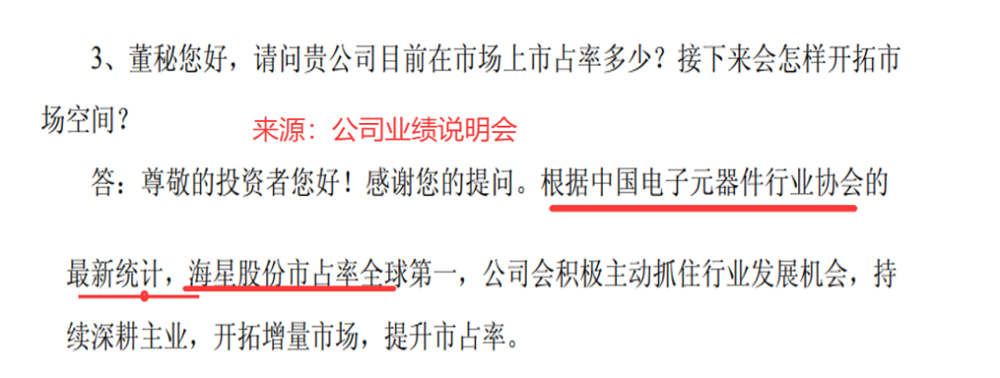
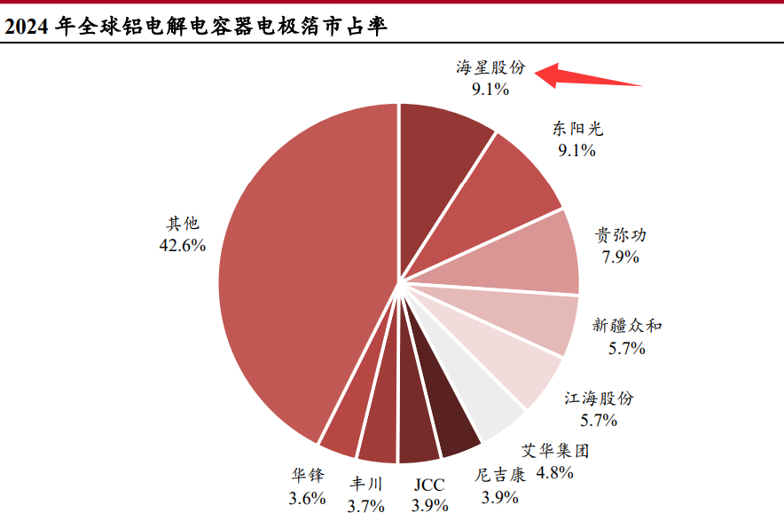
在超级电容领域，AI服务器专用高压电极箔，同时具备极高容量、高稳定性、耐高温等特性，毛利率35%-45%，是传统产品的2倍以上。
公司作为全球中高压化成箔龙头，已明确切入AI服务器/数据中心用铝电解电容器市场。同时也表示800VDC高压架构会增加铝电解电容器的用量，进而带来AI领域用电极箔的需求增长，目前供应能力尚处于产能爬坡阶段。
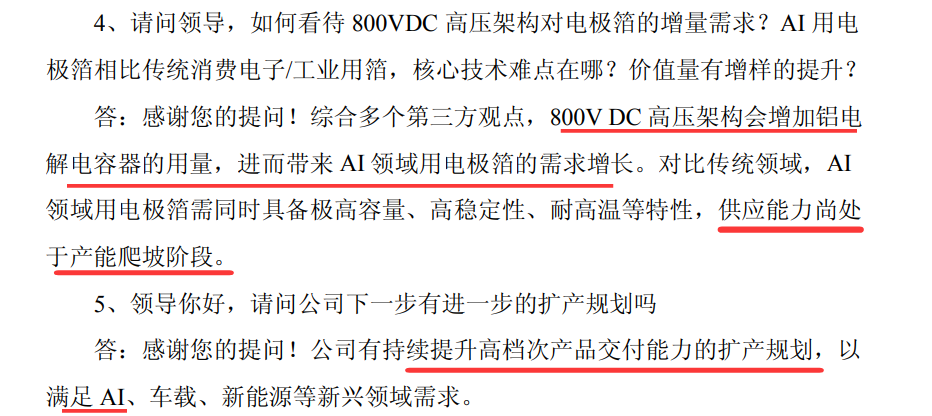
业绩层面，历史上有一定的波动性，但能保持一定盈利。
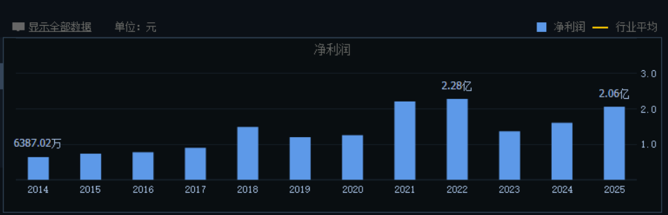
今年一季度，因营收规模扩大、高端产品供给量增加、新基地产能释放，扣非净利同比大增85%。
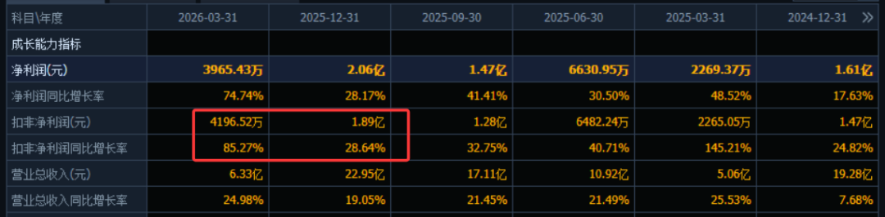
==========
第四家，火炬电子
国内稀缺拥有宇航级电容认证的平台型企业，深耕行业30余年，具备从材料到系统的完整产业链，是军用MLCC核心供应商及军工叠片式超级电容龙头企业。
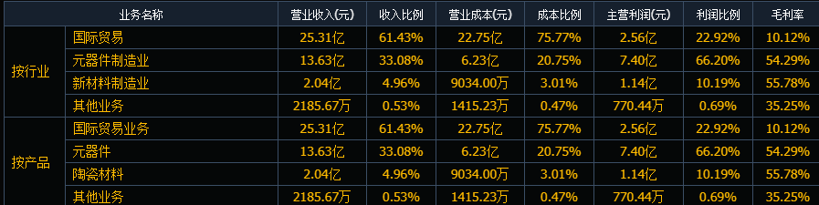
业务结构上，以“元器件、新材料、国际贸易”三大板块为主。其中贸易占比61%，是指代销全球知名品牌的电容器、电感器、滤波器等电子元件，主要用于消费电子、汽车电子、安防等民用市场。毛利率只有10%，利润贡献有限（二成）。陶瓷材料营收占比5%，主要用于热端结构件，对主营影响较小。
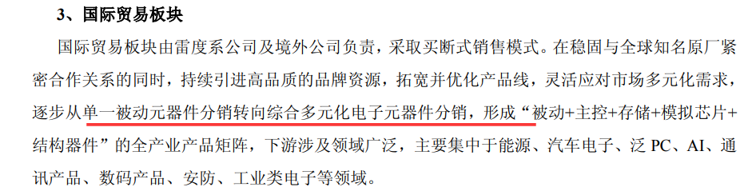
元器件业务是核心，营收占比33%，毛利率54%，贡献了66%的营业利润。涵盖被动元器件和主动元器件，成熟产品包括陶瓷电容器、钽电容器、超级电容器等多系列产品，广泛应用于航空、航天、船舶及通讯、电力、轨道交通、新能源等高端领域。
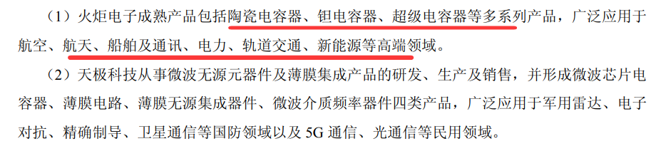
被动元器件中特种MLCC，是国内军用MLCC前排；是首批通过宇航级产品认证的企业，承担多项国家特种科研任务，与航天科技等特种企事业单位有良好合作关系。
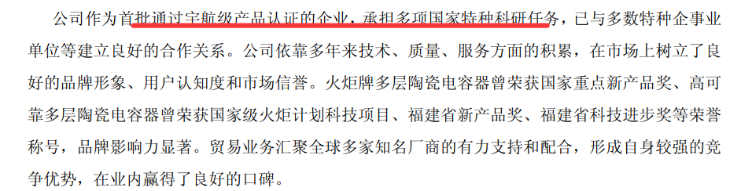
超级电容为自产元器件，营收占比只有3%，产品以军工叠片式EDLC双电层超级电容为主，分宇航级与工业级：宇航级适配航天、机载及单兵装备，用于瞬时启停和稳压；工业级面向风电、轨道及AI服务器，平抑毫秒级功率波动，目前军品占比近七成。
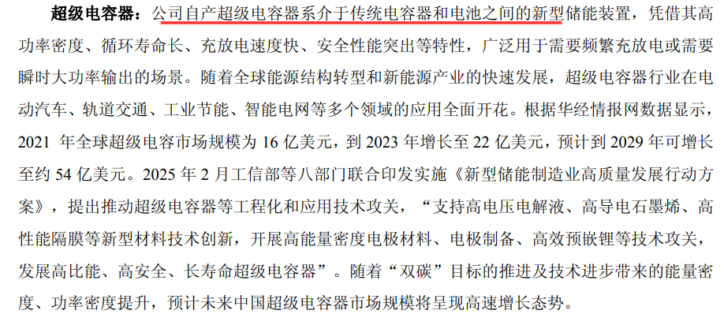
公司表示主推的超级电容器，在AI服务市场有应用，去年11月表示部分客户在送样测试阶段，但目前对业绩贡献有限。
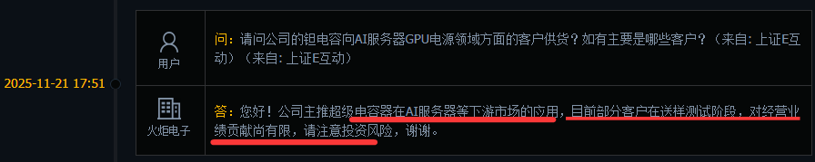
业绩方面，因产品毛利较高，一直保持盈利，但下游受军品需求周期性影响大，波动较大。
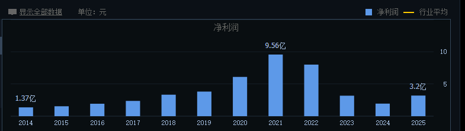
今年一季度，受高毛利特种军工订单延后交付影响，叠加减值计提增多，扣非净利同比下降70%。
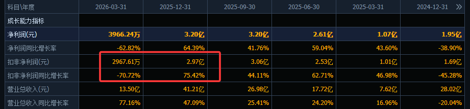
==========
小 结
江海股份是超级电容制造端龙头企业，同时掌握EDLC和LIC两大核心技术；元力股份聚焦上游核心材料，已规模化量产超级电容炭；海星股份为中高压化成箔龙头，拥有AI专用高压电极箔；火炬电子是军工叠片式超级电容龙头，工业级产品有送样AI服务器客户。
助个人走向专业，消除信息差。更多热门赛道投研资料（研报、录音、动态跟踪，复盘视频），均及时发布在知识星球，欢迎扫码加入(每天仅需3毛，且支持3天内退出全额退款）